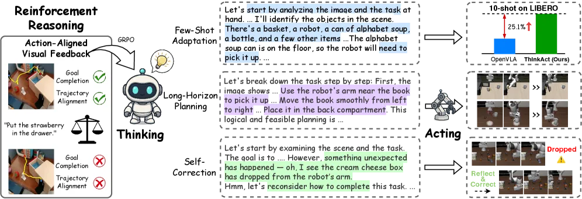
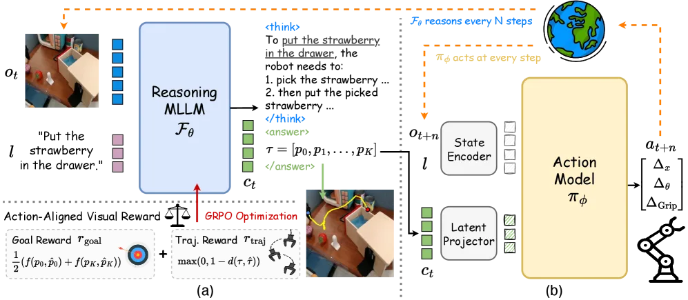
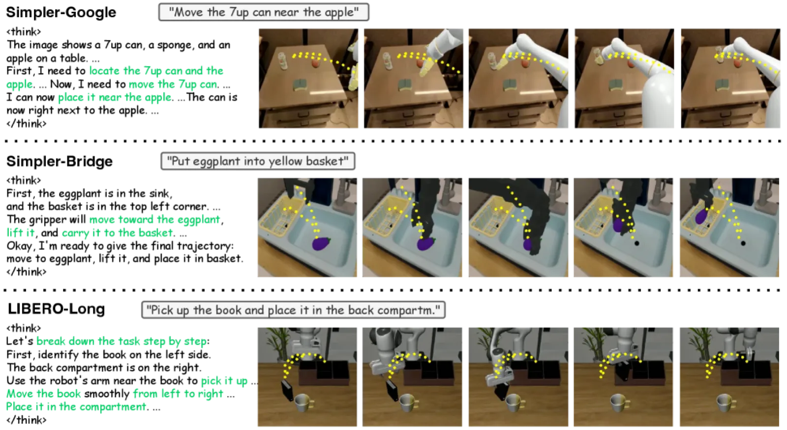
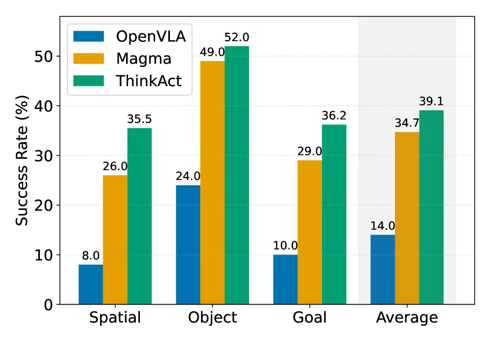

ThinkAct 提出一个双系统框架，将多模态大语言模型（MLLM）的高层推理与下游动作模型的低层执行联结起来：MLLM 通过强化学习生成动作对齐的视觉推理计划，计划被压缩为视觉潜变量（visual plan latent）后条件化动作模型，从而在复杂具身 AI 任务中实现少样本自适应、长时域规划与自我纠错。
现有 VLA 模型通常以端到端方式将多模态输入直接映射到低层动作，缺乏显式推理过程，导致在多步规划和复杂任务变体上表现不足。尽管思维链（Chain-of-Thought, CoT）方法有所改进，但依赖昂贵的人工标注；基于问答（QA）风格的强化学习奖励则难以支撑具身规划的视觉基础。
"Existing approaches typically train VLA models in an end-to-end fashion, directly mapping inputs to actions without explicit reasoning, which hinders their ability to plan over multiple steps or adapt to complex task variations."

ThinkAct 包含两个协同工作的子系统：推理 MLLM（Qwen2.5-VL 7B）负责在视觉观测与语言指令输入下生成具身推理计划，并通过动作对齐的视觉奖励进行强化训练；DiT-based Action Model（432M 参数）以视觉计划潜变量为条件，在目标环境中预测可执行动作序列。

ThinkAct 设计了两类视觉奖励取代传统 QA-style 奖励：
综合奖励公式为：r = 0.9·rvisual + 0.1·rformat，其中 rvisual = 0.5·rgoal + 0.5·rtraj。
训练分两阶段进行：
实验涵盖机器人操作基准（SimplerEnv、LIBERO）和具身推理基准（EgoPlan-Bench2、RoboVQA、OpenEQA），与 DiT-Policy、CoT-VLA、Magma 等基线对比，并考察少样本自适应（10-shot）和自我纠错能力。
| 场景 | DiT-Policy | CoT-VLA | ThinkAct（本文） |
|---|---|---|---|
| Google-VM | 56.0% | — | 71.5% |
| Google-VA | 48.2% | — | 65.1% |
| Bridge-VM | 32.4% | — | 43.8% |
| 子集 | DiT-Policy | CoT-VLA | ThinkAct（本文） |
|---|---|---|---|
| Spatial | — | — | 88.3% |
| Object | — | — | 91.4% |
| Goal | — | — | 87.1% |
| Long | — | — | 70.9% |
| Overall | 76.8% | 83.9% | 84.4% |
| 基准 | Qwen2.5-VL*（基线） | ThinkAct（本文） |
|---|---|---|
| EgoPlan-Bench2（Acc.） | 45.7% | 48.2% |
| RoboVQA（BLEU-4） | 55.7 | 59.8 |
| OpenEQA（Overall%） | 52.0% | 56.2% |


| 配置 | 综合得分 |
|---|---|
| ThinkAct（Full） | 60.1 |
| w/o rtraj | 59.2 |
| w/o rgoal | 59.1 |
| w/o both rewards | 56.9 |
| SFT baseline | 56.4 |
消融结果表明，目标奖励和轨迹奖励均对最终性能有正向贡献；移除任一奖励均导致性能下降，完全去除视觉奖励后性能下降最为明显（60.1 → 56.9）。
论文明确指出，该框架"inherits limitations from pretrained MLLMs, particularly hallucinations in visual or spatial reasoning"，即预训练 MLLM 在视觉或空间推理中存在幻觉，可能生成引用"incorrect object attributes or spatial relationships"的计划，从而影响下游动作执行质量。
虽然 ThinkAct 展示了 10-shot 适应能力，但动作模型的训练仍依赖 OXE 等大规模机器人数据集进行预训练，在全新形态或环境中的零样本泛化能力尚不明确。
推理阶段需要先运行 Qwen2.5-VL 7B 生成视觉推理计划，再驱动 432M 参数的 DiT-based 动作模型，双系统的串联推理对实时控制场景的延迟要求构成挑战；GRPO fine-tuning（batch 64，rollout 5）的训练成本也不可忽视。